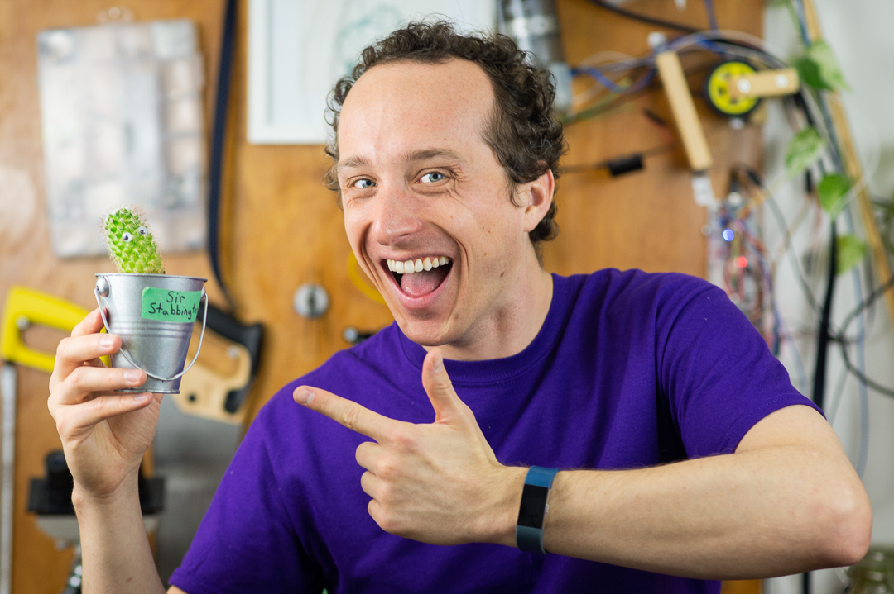

Home - In The News - Speaking - Contact - Support
I believe that a more science-literate world is a better world, and that getting there will require compassion and imagination.
Here are some videos I've made with that in mind:
I ran a marathon-long timeline of human history. For more, Click Here
I sealed myself in an air-tight DIY biodome. For more on #KurtisInAJar, Click Here
I built the #DominoUniverse, a timeline of everything in 13799 handmade dominoes. For more, Click Here

I made a robotic cactus that gets watered with a single drop each time someone new subscribes to my YouTube channel. For more, Click Here